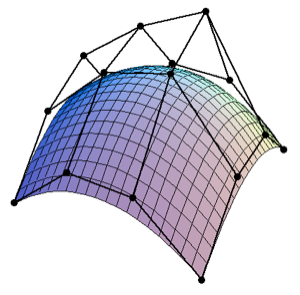

Manuale Teorico
Cos'è una superficie di Bézier?
Una superficie di Bézier è una particolare spline matematica usata nella computer grafica e nel CAD per rappresentare superfici curve in maniera matematicamente conveniente.
In analisi matematica, una spline è una funzione, costituita mediante un insieme di polinomi opportunamente composti, il cui scopo è quello di interpolare un intervallo di punti
in modo che la funzione sia continua almeno fino ad un dato ordine di derivate in ogni punto dell'intervallo di definizione.
La generica superficie di Bézier di bigrado \( (h,k) \) può essere definita come una superficie parametrica dove la posizione del generico punto \( \vec{P} \), funzione di coordinate parametriche
\( u,v \) è viene definita come segue:
$$ \vec{P}(u,v) = \sum_{i=0}^{h} \sum_{j=0}^{k}{B^{h}_i} (u) {B^{k}_j} (v) \vec{P_{i,j}} $$
Cosa descrive una superficie di Bézier?
Una superficie di Bézier è una funzione di due variabili \( (h,k) \) definita sul quadrato unitario del piano \( uv \) e avente valori in \( \mathbb{E}^3 \), lo spazio affine. Ciò significa:
$$ \vec{P}(u,v): [0,1] \times [0,1] \to \mathbb{E}^3 $$
Essa è descritta da un insieme di punti di controllo \( \{\vec{P_{i,j}}\}^{i = 0,...,h}_{j = 0,...,k} \) con \( h \geq 1 , k \geq 1 \) che rappresentano il poliedro di controllo.
L'idea che sta alla base della teoria di Bézier è di definire l'intera superficie a partire da questo insieme finito di punti, in modo che il suo supporto ne segua l'andamento.

La coppia \( (h,k) \) è detta bigrado della superficie di Bézier e ne determina la quantità \( (h+1) \cdot (k+1) \) di punti del poliedro di controllo.
Gli ultimi elementi che descrivono la superficie di Bézier nella sua forma generica vista precedentemente sono i polinomi di Bernstein \( {B^{n}_i} (u) \). Questi rappresentano i
pesi, come coefficienti polinomiali, da dare ai punti di controllo in ogni punto del piano \( uv \) per descrivere la superficie di Bézier nello spazio \( \mathbb{E}^3 \).
Tali polinomi possono essere scritti come:
$$ {B^{n}_i} (u) = \binom n i u^i (1-u)^{n-i}\mspace25pt\text{con:}\mspace25pt \binom n i = \frac{n!}{i!(n-i)!}$$
Oss. Le superfici di Bézier furono descritte per la prima volta nel 1962 dall'ingegnere francese Pierre Bézier, che le utilizzò per progettare carrozzerie di automobile. Le superfici di Bézier possono essere di qualunque bigrado, ma quelle bicubiche \( (h=k=3) \) generalmente forniscono abbastanza gradi di libertà per la maggior parte delle applicazioni.
Oss. Nonostante le superfici di Bézier siano state introdotte partendo da fogli semplici di superficie e mostrando la corrispondenza tra quadratiche a sella e superficie di Bézier di bigrado \( (1,1) \) non tutte le superfici di Bézier rappresentano fogli semplici di superficie.
Esiste un procedimento per valutare una superficie di Bézier?
Un algoritmo operativo presentato a lezione per ottenere tutti i punti di una superficie di Bézier consiste nell'Algoritmo di de Casteljau.
Esso rappresenta un metodo ricorsivo per valutare i polinomi di Bernstein visti pocanzi ed è una diretta estensione del medesimo algoritmo presentato a lezione per le curve di Bézier.
L'algoritmo:
Scegliamo come dominio di definizione il quadrato unitario \( [0,1] \times [0,1] \) del piano \( uv \) e fissiamo gli \( (h+1) \cdot (k+1) \) punti \( P_{0,0},...,P_{h,k} \in \mathbb{E}^3 \) del poliedro di
controllo.
Fissiamo \( (\bar{u},\bar{v}) \) nel dominio di definizione della superficie di Bézier e cerchiamo di descrivere come ottenere il punto \( P(\bar{u},\bar{v}) \) immagine sulla superficie.
Consideriamo il poliedro di controllo \( \{ P_{0,0},P_{h,0},P_{0,1},P_{h,1},...,P_{h,k} \} \); nella formulazione dell'algoritmo di de Casteljau questi punti si considerano disposti su una griglia combinatoria
che suddividerà il poliedro di controllo in \( h \cdot k \) quadrilateri \( q_{i,j}\) di vertici
\( \{ P_{i,j},P_{i+1,j},P_{i,j+1},P_{i+1,j+1} \}^{i = 0,1,...,h-1}_{j = 0,1,...,k-1} \).
Per ciascuno di questi quadrilateri dobbiamo ottenere un nuovo punto, che chiameremo \( P^1_{i,j} \), verificando
le seguenti identità tra rapporti semplici:
- da \( (0, \bar{u}, 1) = (P_{i,j},A_i, P_{i,j+1}) \) ricaviamo \( A_i \)
- da \( (0, \bar{u}, 1) = (P_{i+1,j},A_{i+1}, P_{i+1,j+1}) \) ricaviamo \( A_{i+1} \)
- da \( (0, \bar{v}, 1) = ( A_i,P^1_{i,j},A_{i+1}) \) ricaviamo \( P^1_{i,j} \)
Così facendo abbiamo ottenuto \( h \cdot k \) nuovi punti che descrivono un nuovo poliedro di controllo \( \{ P^1_{0,0},...,P^1_{h-1,k-1} \} \) che chiamiamo poliedro di 1° livello.
Ripetendo questo procedimento in maniera ricorsiva otterremo \( (h-1) \cdot (k-1) \) nuovi punti che descrivono il poliedro di controllo di 2° livello e così via.
L'algoritmo di de Casteljau terminerà al livello \( r = max(h,k) \) con il punto \( P^r_{0,0}\) che corrisponderà al punto \( P(\bar{u},\bar{v}) \) , ovvero il punto della superficie di Bézier per la coppia
\( (\bar{u},\bar{v}) \) fissata all'inizio.
Oss.L'algoritmo di de Casteljau è definito solo per \( h=k \) ma abbiamo discusso a lezione come sia possibile estenderlo nel caso più generico \( h \ne k \) utilizzando la tecnica dell'innalzamento di grado laddove serve. Per una visualizzazione grafica dell'algoritmo di de Casteljau rimandiamo a questa pagina del corso.
Quali sono i vantaggi e gli svantaggi nell'utilizzo del formalismo delle superfici di Bézier al computer?
I principali vantaggi nell'utilizzo delle superficie di Bézier in computer grafica sono:
- Una superficie di Bézier si trasformerà allo stesso modo dei suoi punti di controllo se essi vengono trasformati mediante affinità. Per applicare una affinità all'intera superficie, quindi basterà applicarla ai soli punti di controllo.
- L'intera superficie è sempre contenuta nell'involucro convesso individuato dai punti del poliedro di controllo.
- Tutte le linee \( u = costante \) e \( v = costante \) rappresentano delle curve di Bezier. In particolare, i punti corrispondenti agli angoli del quadrato unitario dell'insieme di definizione della superficie corrispondono anche a quattro dei punti di controllo della superficie stessa. Inoltre, il bordo delle superfici di Bezier è dato descritto dalle poligonali che formano il bordo del poliedro di controllo.
- vale la proprietà di suddivisione: preso un valore specifico di \( u \) o di \( v \) esso identifica due “sottosuperfici” che sono anch'esse descrivibili con il formalismo delle superfici di Bézier
- se tutti i punti del poliedro di controllo sono complanari ed equamente distanziati il foglio è una porzione di piano.
Gli svantaggi sono invece:
- Possiamo manipolare il poliedro di controllo per ottenere una superficie desiderabile senza però avere un controllo locale, cioè le variazioni di un solo punto del poliedro di controllo portano ad un rilevante cambiamento dell'intera superficie. Inoltre la variazione di un solo punto del poliedro di controllo implica dover ricalcolare l'intera superficie di Bézier.
- Questo formalismo non è adatto a risolvere problemi di interpolazione di una griglia di punti, ovvero risulta molto difficile definire una superficie di Bézier che passa per un insieme di punti dati.
- Per rappresentare superfici complesse, come per esempio superfici molto ondulate, abbiamo bisogno di bigradi alti, che costringono il computer a lavorare con polinomi sempre più complessi, degradando quindi le prestazioni.
- Non si possono rappresentare sfere, calotte sferiche e superfici di rotazione con questo formalismo.
- Calcolare l'intersezione di superfici di Bézier con enti lineari non è semplice.
Considerando gli svantaggi appena descritti, le superficie di Bézier vengono spesso usate in computer grafica come reti di patch bicubiche ovvero come insiemi di superfici con \( (h=k=3) \)
opportunamente incollate tra loro.
Questo permette di definire una singola patch bicubica utilizzando solamente 16 punti di controllo, permettendo di lavorare con polinomi semplici, garantendo maggior
controllo locale e approssimando con pochi numeri di patch bicubiche superfici come sfere e cilindri.
Tuttavia, resta ancora un problema il calcolo di intersezione di superfici di Bézier con enti lineari ad esempio le rette; Questo problema è spesso affrontato durante il raytracing di mesh realizzate come incollamenti di
patch di Bézier e viene risolto solo con decomposizione della mesh in triangoli.
Scelte progettuali adottate nella realizzazione di BezierSplit
Durante la realizzazione del progetto abbiamo scelto di generare proceduralmente, per ogni livello, delle superfici di Bézier di bigrado fissato \( (h=k=3) \).
Inizialmente viene generata una griglia di 16 punti di controllo complanari, che verranno spostati in maniera casuale, dipendentemente anche dalla difficoltà, sommando o sottraendo del rumore a ciascun punto.
Successivamente circa 10.000 punti \( P_{u,v} \) della superficie di Bézier vengono valutati in maniera discreta, suddividendo gli intervalli \( [0,1] \) in 100 sottointervalli, valutando quindi
\( 100 \times 100 \) punti del piano.
Questi punti verranno poi organizzati per essere visualizzati come triangoli della mesh creata.
Di seguito mostriamo il codice in C# realizzato per poter valutare la superficie di Bézier \( \vec{P}(u,v) = \sum_{i=0}^{h} \sum_{j=0}^{k}{B^{h}_i} (u) {B^{k}_j} (v) \vec{P_{i,j}} \) nel caso specifico
di bigrado \( (h=k=3) \).
Notiamo come, per efficienza, abbiamo scelto di pre-calcolare i valori dei 4 polinomi di Bernstein per il caso \( (n=3) \) , rendendo più semplice la scrittura del codice senza introdurre le funzioni
fattoriale generalmente utilizzate.
Il calcolo del volume, invece, è stato approssimato come somma dei piccoli parallelepipedi, aventi base pari al quadrato di lato \( \frac{1}{100} = 0,01 \) e altezza variabile a seconda dei punti \( P_{u,v} \) calcolati precedentemente.
Home | Teoria | Manuale Utente | Gioco